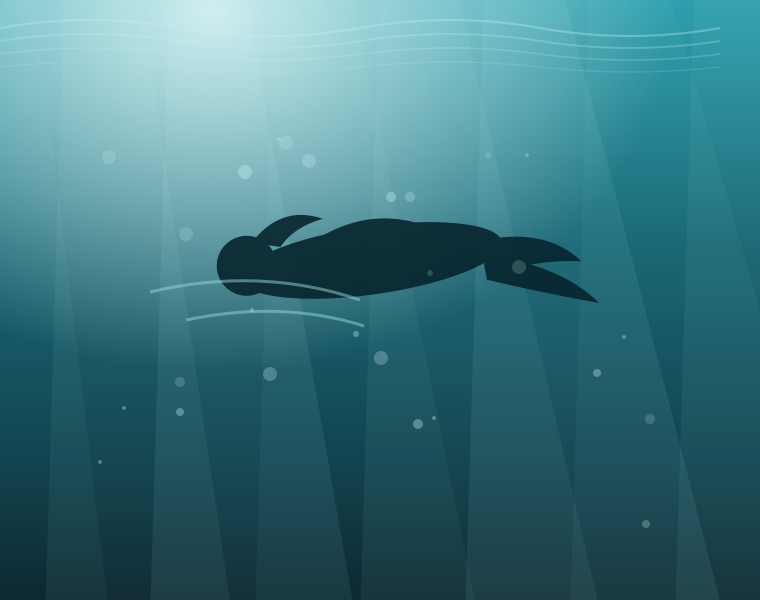

It knows the water better than the forecast does
Tide predictions live on the watch, not in an app. Pick a coastline once and the watch keeps giving you high water, low water and stream direction for the next four years, with no signal and no phone in your dry bag.
- Harmonic tide model, accurate to eleven minutes
- Water temperature at depth, not at the surface
- Swell and wind pulled in over Bluetooth when you're near a phone